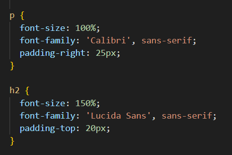
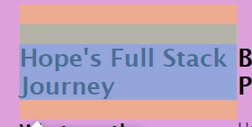
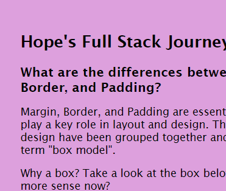

Hope's Full Stack Journey
What are the differences between Margin, Border, and Padding?
Margin, Border, and Padding are essential in CSS as they play a key role in layout and design. These elements of design have been grouped together and penned the term "box model".
Why a box? Take a look at the box below, does it make more sense now?
So essentially Margin, Border, and Padding surround the content making... you guessed it a box!
These elements all work together helping to define the space between elements, playing their own role to create true html beauty.

Margin
The margin is transparent, it wraps around the padding, border and content creating space which surrounds the box.
Border
This surrounds the padding and content, borders can vary. They can be solid and thick or invisible.
Padding
This is the space closest to the content, it sits between the content and the border of the 'box'.
Looking at the box above it clearly illustrates the differences between these elements. Padding defines the amount of whitespace there should be within the box. Margins define the amount of whitespace that should exist outside of the box.

Webflow.com adds, padding can be set to zero pixels and above while margins can be set to auto or even have negative values.
There are many other qualities and intricacies between these elements, they can overlap, do this, do that, and probably some other magic we haven't realised yet!
I have used the box model to define spaces on my blog, to make it fix more seamlessly together and create a clear design.
This code asks for padding on the h2 & p elements. h2 has allocated padding of 20px, creating space from the top of the page to define the heading.
This image shows the breakdown of the box, the green box shows us how much padding is allocated and how it will look if the code is kept.
This final image shows the results of the h2 code for the padding on the finished html page.
Ngā Mihi koutou!